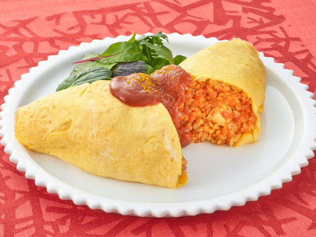
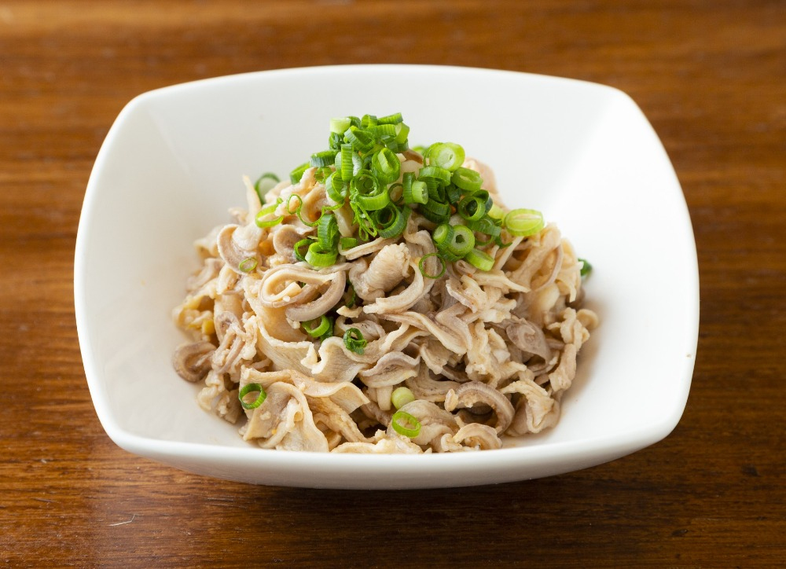

オムライス
調理したご飯を薄焼き卵で包んだ料理。
気分で中のご飯をケチャップライスにしたり、ただ炒めたご飯にしたりする。

酢もつ
牛や豚などの内臓を湯通しして、ポン酢や特製ダレなどで和えた料理。
薬味とかを添えないで食べることもできるけど、唐辛子を入れた少し辛いぐらいのほうが好き。
調理したご飯を薄焼き卵で包んだ料理。
気分で中のご飯をケチャップライスにしたり、ただ炒めたご飯にしたりする。
牛や豚などの内臓を湯通しして、ポン酢や特製ダレなどで和えた料理。
薬味とかを添えないで食べることもできるけど、唐辛子を入れた少し辛いぐらいのほうが好き。